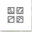

<div [ngStyle]="myStyle" class="layer-list">
    <nz-card class="card" [nzTitle]="'图层列表'" [nzExtra]="layerListTemplate">
        <nz-input-group [nzSuffix]="suffixIcon">
            <input type="text" nz-input placeholder="搜索" [(ngModel)]="searchValue">
        </nz-input-group>
        <ng-template #suffixIcon>
            <i nz-icon nzType="search" nzTheme="outline"></i>
        </ng-template>
        <div class="infinite-container">
            <nz-list nzSize="small" infiniteScroll>
                <nz-tree [nzSearchValue]="searchValue" [nzBlockNode]="true" [nzData]="nodes" [nzSelectedKeys]="defaultSelectedKeys" nzCheckable [nzCheckedKeys]="defaultCheckedKeys" (nzCheckBoxChange)="nzCheck($event)" (nzSearchValueChange)="nzEvent($event)">
                </nz-tree>
            </nz-list>
        </div>
        <ng-template #layerListTemplate>
            <span><i (click)="exit()" class="bt" nzTooltipTitle="隐藏" nzTooltipPlacement="rightTop" nz-tooltip nz-icon nzType="export" nzTheme="outline"></i></span>
        </ng-template>
    </nz-card>
</div>


<div class="layer" nzTooltipTitle="图层" nzTooltipPlacement="rightTop" nz-tooltip (click)="exit()">
    
</div>